에너지관리기사 (2012-09-15 기출문제)
1과목: 연소공학
1. 가열실의 이론 효율(E1)을 옳게 나타낸 식은? (단, tr : 이론연소온도, ti : 피열물의 온도)
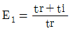
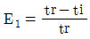
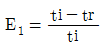
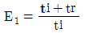
(정답률: 78%)

2. 다음 기체 연료 중 단위질량당 고위발열량(MJ/kg)이 가장 큰 것은?
- 메탄
- 에탄
- 프로판
- 수소
(정답률: 62%)
3. 인화점이 50℃ 이상인 원유, 경유 등에 사용되는 인화점 시험방법은?
- 태그 밀폐식
- 아벨펜스키 밀폐식
- 클리브렌드 개방식
- 펜스키마텐스 밀폐식
(정답률: 72%)
4. 이론공기량에 대한 설명으로 가장 거리가 먼 것은?
- 연소에 필요한 최소한의 공기량이다.
- 연료를 완전히 연소할 수 있는 공기량이다.
- 연료의 연소 시 이론적으로 필요한 공기량이다.
- 실제공기량과 이론공기량의 비를 공기비라 한다.
(정답률: 66%)
5. 다음 중 열전도율의 단위는?
- kcal/m ㆍ h ㆍ ℃
- kcal/m2 ㆍ h ㆍ ℃
- kcal/m ㆍ h2 ㆍ ℃
- kcal/m ㆍ h ㆍ ℃2
(정답률: 59%)
6. 프로판(C3H8) 및 부탄(C4H10)이 혼합된 LPG를 건조 공기로 연소시킨 가스를 분석하였더니 CO2 11.32%, O2 3.76%, N2 84.92% 의 조성을 얻었다. LPG 중의 프로판과 부탄의 부피비는?
- 100.00 : 0.00
- 91.65 : 8.35
- 86.28 : 13.72
- 73.15 : 26.85
(정답률: 64%)
7. 공기비 2.3 으로 연소시키는 석탄연소로에서 실제 공기량이 11.96Sm3/kg 일 때 이론공기량은 약 몇 Sm3/kg 인가?
- 5.2
- 10.4
- 13.8
- 27.5
(정답률: 50%)
8. 액체연료의 미립화 방법이 아닌 것은?
- 고속기류
- 충돌식
- 와류식
- 혼합식
(정답률: 68%)
9. 다음 연료 중 발열량(kcal/kg)이 가장 큰 것은?
- 중유
- 프로판
- 무연탄
- 코크스
(정답률: 79%)
10. 다음 중 중유연소의 장점이 아닌 것은?
- 발열량이 석탄보다 크고, 과잉공기가 적어도 완전 연소시킬 수 있다.
- 점화 및 소화가 용이하며, 화력의 가감이 자유로워 부하 변동에 적용이 용이하다.
- 재가 적게 남으며, 발열량, 품질 등이 고체연료에 비해 일정하다.
- 회분을 전혀 함유하지 않으므로 이것에 의한 장해는 없다.
(정답률: 72%)
11. 연소가스와 외부공기의 밀도차에 의해서 생기는 압력차를 이용하는 통풍 방법은?
- 자연 통풍
- 평행 통풍
- 압입 통풍
- 유인 통풍
(정답률: 80%)
12. 다음과 같은 조성을 가진 석탄의 완전연소에 필요 한 이론공기량(kg/kg)은 약 얼마인가?
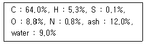
- 7.5
- 8.8
- 9.7
- 10.4
(정답률: 56%)
13. 프로판(Propane) 가스 1kg을 완전연소시킬 때 필요한 이론공기량(Sm3/kg)은?
- 6
- 8
- 10
- 12
(정답률: 71%)
14. 다음 연소가스의 성분 중 대기오염 물질이 아닌 것은?
- 입자상물질
- 이산화탄소
- 황산화물
- 질소산화물
(정답률: 77%)
15. 다음 연소 방법 중 기체 연료의 연소 방법에 해당 하는 것은?
- 증발연소
- 표면연소
- 분무연소
- 확산연소
(정답률: 85%)
16. 연료의 연소 시 CO2max(%) 는 어느 때의 값인가?
- 이론공기량으로 연소 시
- 실제공기량으로 연소 시
- 과잉공기량으로 연소 시
- 이론양보다 적은 공기량으로 연소 시
(정답률: 77%)
17. 연소 배출가스 중 CO2 함량을 분석하는 이유로 가장 거리가 먼 것은?
- 연소상태를 판단하기 위하여
- 공기비를 계산하기 위하여
- CO 농도를 판단하기 위하여
- 열효율을 높이기 위하여
(정답률: 67%)
18. 세정식 집진장치에서 분리되는 원리로서 가장 거리가 먼 것은?
- 액방울, 액막과 같은 작은 매진과 관성에 의한 충돌 부착
- 큰 매진의 확산에 의한 부착
- 습기 증가로 입자의 응집성 증가에 의한 부착
- 매진을 핵으로 한 증기의 응결
(정답률: 60%)
19. 랭킨사이클에서 높은 압력으로 열효율을 증가시키고 저압측에서 과도한 습도를 피하는 한편 터빈일을 증가시키는 목적으로 고안된 사이클은?
- 브레이턴사이클
- 재생사이클
- 재열사이클
- 카르노사이클
(정답률: 68%)
20. 다음 중 이론공기량(Sm3/Sm3)이 가장 큰 것은?
- 오일가스
- 석탄가스
- 천연가스
- 액화석유가스
(정답률: 73%)
2과목: 열역학
21. 기체를 압축기를 통하여 P1에서 P2까지 압축하는데 필요한 일을 최소로 하려면 다음 중 어느 과정이 가장 적합하겠는가?
- 가역 단열 압축(k=1.4)
- 폴리트로픽 압축(PV1.2=일정)
- 비가역 단역 압축
- 등온 압축
(정답률: 64%)
22. 냉난방 겸용의 열펌프 사이클을 구성하기 위한 주요요소가 아닌 것은?
- 전기구동 압축기
- 4방 밸브
- 매니폴드 게이지
- 전자팽창밸브
(정답률: 77%)
23. 비엔탈피가 326kJ/kg 인 어떤 기체가 노즐을 통하여 단열적으로 팽창되어 비엔탈피가 322kJ/kg 으로 되어 나간다. 유입 속도를 무시할 때 유출 속도는 몇 m/s인가?
- 4.4
- 22.6
- 64.7
- 89.4
(정답률: 48%)
24. 수증기의 내부에너지 및 엔탈피가 터빈 입구에서 각각 2900kJ/kg, 3200kJ/kg이고 터빈 출구에서 2300kJ/kg, 2500kJ/kg 일 때 터빈의 출력은 몇 kW 인가? (단, 터빈은 단열되어 있으며 발생되는 수증기의 질량 유량은 2kg/s 이다.)
- 600
- 700
- 1200
- 1400
(정답률: 33%)
25. 0℃ 물의 증발잠열 값에 가장 가까운 것은?
- 330kJ/kg
- 420kJ/kg
- 2250kJ/kg
- 2500kJ/kg
(정답률: 43%)
26. 다음 중 절탄기에 관한 설명으로 옳은 것은?
- 과열증기의 일부로 급수를 예열하는 장치이다.
- 연도 가스의 열로 급수를 예열하는 장치이다.
- 연도 가스의 열로 고온의 공기를 만드는 장치이다.
- 연도 가스의 열로 고온의 증기를 만드는 장치이다.
(정답률: 62%)
27. 포화증기를 일정한 압력 아래에서 가열하면 어떤 상태가 되는가?
- 과열증기
- 건포화증기
- 습증기
- 포화액
(정답률: 71%)
28. 기체상수가 R 인 이상기체가 일정 온도 하에서 가역팽창하여 압력이 처음 상태의 1/2배로 되었다. 단위 질량당 엔트로피 변화량은?
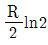
- Rln2
- 2R
- 2Rln2
(정답률: 62%)
29. 일반적으로 사용되는 냉매로 가장 거리가 먼 것은?
- 암모니아
- 프레온
- 이산화탄소
- 오산화인
(정답률: 80%)
30. 이상기체가 V1, P1 으로부터 V2, P2 까지 등온팽창 하였다. 이 과정 중에 일어난 내부 에너지 변화량 ΔU, 엔탈피 변화량 ΔH, 엔트로피 변화량 ΔS 를 옳게 나타낸 것은?
- ΔU＞0, ΔH＞0, ΔS＞0
- ΔU=0, ΔH=0, ΔS＜0
- ΔU=0, ΔH>0, ΔS＜0
- ΔU=0, ΔH=0, ΔS＞0
(정답률: 74%)
31. 60℃ 로 일정하게 유지되고 있는 항온조가 실내온도 26℃인 실험실에 설치되어 있다. 이 때 항온조로부터 실험실 내의 실내공기로 1200J 의 열손실이 있는 경우에 대한 설명으로 틀린 것은?
- 비가역 과정이다.
- 실험실 전체(실험실 공기와 항온조 내의 물질)의 엔트로피 변화량은 약 7.6J/K 이다.
- 항온조 내의 물질에 대한 엔트로피 변화량은 약 -3.6J/K 이다.
- 실험실 내에서 실내공기의 엔트로피 변화량은 약 4.0J/K 이다.
(정답률: 64%)
32. 표준증기압축 냉동시스템에 비교하여 흡수식 냉동 시스템의 주된 장점은 무엇인가?
- 압축에 소요되는 일이 줄어든다.
- 시스템의 효율이 상승한다.
- 장치의 크기가 줄어든다.
- 열교환기의 수가 줄어든다.
(정답률: 75%)
33. 다음 중 에너지 보존의 법칙은 어느 것인가?
- 열역학 제0법칙
- 열역학 제1법칙
- 열역학 제2법칙
- 열역학 제3법칙
(정답률: 86%)
34. 이상기체 1몰이 23℃에서 부피가 23L 에서 45L 로 등온가역 팽창하였을 때 엔트로피 변화는 몇 J/K 인가? (단,
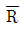
8.314 kJ/kmol∙K 이다.)- -5.58
- 5.58
- -1.67
- 1.67
(정답률: 51%)
35. 600℃ 의 고열원과 200℃ 의 저열원 사이에서 작동하는 카르노 사이클의 효율은?
- 0.666
- 0.542
- 0.458
- 0.333
(정답률: 52%)
36. 피스톤이 장치된 용기속의 온도 30℃, 압력 200kPa, 체적 V1m3 의 이상기체가 압력이 일정한 과정 으로 체적이 원래의 3배로 되었을 때 이 기체의 온도는 약 몇 ℃ 인가?
- 30
- 90
- 636
- 910
(정답률: 39%)
37. 열역학 사이클에 대한 설명으로 틀린 것은?
- 오토사이클의 효율은 압축비만의 함수이다.
- 압축비가 증가하면 일반적으로 오토사이클의 효율은 증가한다.
- 디젤사이클의 효율은 압축비와 차단비(cut-offratio)의 함수이다.
- 동일한 압축비에서는 디젤 사이클의 효율이 오토사이클의 효율보다 높다.
(정답률: 61%)
38. 압력이 1200kPa 인 탱크에 저장된 건포화 증기가 노즐로부터 100kPa 로 분출되고 있다. 임계압력 Pc는 몇 kPa인가? (단, 비열비는 1.135 이다.)
- 693
- 643
- 582
- 525
(정답률: 26%)
39. 그림과 같은 카르노 열기관의 사이클 P-V 선도에서 d→a 과정이 나타내는 것은?
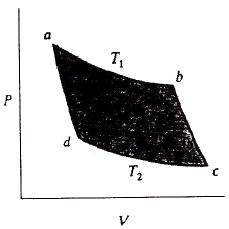
- 등적과정
- 등엔탈피과정
- 등엔트로피과정
- 등온과정
(정답률: 61%)
40. 300K, 100kPa 에서 어떤 기체의 부피가 500m3 라면, 400K, 150kPa에서 부피는 약 얼마인가?
- 666m3
- 444m3
- 333m3
- 222m3
(정답률: 55%)
3과목: 계측방법
41. 다음 중 면적식 유량계는?
- 오리피스(Orifice)미터
- 로터미터(Rotameter)
- 벤투리(Venturi)미터
- 플로노즐(Flow-nozzle)
(정답률: 86%)
42. 복사온도계에서 전복사에너지는 절대온도의 몇 승에 비례하는가?
- 2
- 3
- 4
- 5
(정답률: 82%)
43. 아르키메데스의 부력 원리를 이용한 액면측정 기기는?
- 차압식 액면계
- 퍼지식 액면계
- 기포식 액면계
- 편위식 액면계
(정답률: 78%)
44. 노내압(爐內壓)을 제어하는데 필요하지 않는 조작은?
- 공기량 조작
- 연소가스 배출량 조작
- 급수량 조작
- 댐퍼의 조작
(정답률: 69%)
45. PR 열전대에 사용하는 보상도선의 허용오차는 몇 % 이내 인가?
- 0.5
- 3
- 5
- 10
(정답률: 64%)
46. 다이어프램식 압력계의 압력증가 현상에 대한 설명으로 옳은 것은?
- 다이어프램에 가해진 압력에 의해 격막이 팽창한다.
- 링크가 아래 방향으로 회전한다.
- 섹터기어가 시계방향으로 회전한다.
- 피니언은 시계방향으로 회전한다.
(정답률: 76%)
47. 차압식 유량계에 대한 설명 중 틀린 것은?
- 관로에 오리피스, 플로 노즐 등이 설치되어 있다.
- 정도(精度)가 좋으나, 측정범위가 좁다.
- 유량은 압력차의 평방근에 비례한다.
- 레이놀즈수가 1⑤ 이상에서 유량계수가 유지된다.
(정답률: 65%)
48. 다음 중 기본단위의 정의가 잘못된 것은?
- “미터” 는 빛의 진공에서 1/299,792,458초 동안 진행한 경로의 길이
- “초” 는 세슘 133 원자의 바닥상태에 있는 두 초미세 준위 사이의 전이에 대응하는 복사선의 9,192,631,770 주기의 지속시간
- “켈빈” 은 물의 삼중점에 해당하는 열역학적 온도의 1/273.16
- “몰” 은 수소 2의 0.012 킬로그램에 있는 원자의 개수와 같은 수의 구성요소를 포함하는 어떤 계의 물질량
(정답률: 66%)
49. 내경 10cm의 관에 물이 흐를 때 피토관에 의하여 측정한 결과 유속이 5m/s임을 알았다. 이 때의 유량은?
- 19kg/s
- 29kg/s
- 39kg/s
- 49kg/s
(정답률: 57%)
50. 액주에 의한 압력측정에서 정밀한 측정을 할 때 다음 중 필요로 하지 않는 보정은?
- 온도의 보정
- 중력의 보정
- 높이의 보정
- 모세관 현상의 보정
(정답률: 81%)
51. 가스 채취 시 주의하여야 할 사항에 대한 설명으로 틀린 것은?
- 가스의 구성 성분의 비중을 고려하여 적정 위치에서 측정하여야 한다.
- 가스 채취구는 외부에서 공기가 잘 유통할 수 있도록 하여야 한다.
- 채취된 가스의 온도, 압력의 변화로 측정오차가 생기지 않도록 한다.
- 가스성분과 화학반응을 일으키기 않는 관을 이용하여 채취한다.
(정답률: 87%)
52. 다음 중 기체 및 비점 300℃ 이하의 액체를 측정하는 물리적 가스 분석계로 선택성이 우수한 가스분석계는?
- 밀도법
- 기체크로마토그래피법
- 세라믹법
- 오르자트법
(정답률: 66%)
53. 헴펠식(Hempel type) 가스분석장치에 흡수되는 가스와 사용하는 흡수제의 연결이 잘못된 것은?
- CO - 차아황산소다
- O2 - 알칼리성 피로갈롤용액
- CO2 - 30% KOH 수용액
- CmHn- 진한 황산
(정답률: 73%)
54. 백금 ㆍ 로듐 - 백금 열전대 온도계의 특성이 아닌 것은?
- 정밀 측정용으로 주로 사용된다.
- 다른 열전대 온도계보다 안정성이 우수하여 고온 측정에 적합하다.
- 가격이 비싸다.
- 열기전력이 다른 열전대에 비하여 가장 크다.
(정답률: 68%)
55. 압력센서인 스트레인게이지의 응용원리로 옳은 것은?
- 온도의 변화
- 전압의 변화
- 저항의 변화
- 금속선의 굵기 변화
(정답률: 64%)
56. [그림]과 같은 U자관에서 유도되는 식은?
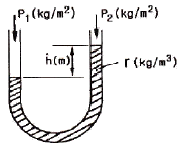
- P1 = P2 -h
- h = γ (P1 - P2)
- P1 + P2 = γh
- P1 = P2 + γh
(정답률: 72%)
57. 다음 물리적 인자 중 빛의 흡수율과 크기가 같은 것은?
- 반사율
- 복사율
- 투과율
- 굴절율
(정답률: 62%)
58. 다음 [그림]과 같은 tank 내 기체의 압력을 측정하는 것에 수은을 넣은 U자관 압력계를 사용한다. 대기압이 756mmHg일 때 수은면의 높이차가 124mm 이면 tank 내 기체의 절대압 Po는 몇 kg/cm2 인가? (단, 수은의 비중량은 13.8g/cm3이다.)
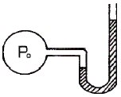
- 1.21
- 1.12
- 0.17
- 0.13
(정답률: 36%)
59. 제어계가 불안정해서 제어량이 주기적으로 변화하는 좋지 못한 상태를 무엇이라 하는가?
- 오버슈트
- 헌팅
- 외란
- 스텝응답
(정답률: 80%)
60. 유속 측정을 위해 피토관을 사용하는 경우 양쪽관 높이 의 차(△h)를 측정하여 유속(V)를 구하는데 이 때 V는 △h와 어떤 관계가 있는가?
- Δh에 비례
- Δh 제곱에 비례
- √Δh에 비례
- 1/Δh에 비례
(정답률: 73%)
4과목: 열설비재료 및 관계법규
61. 실리카(silica) 전이특성에 대한 설명으로 옳은 것은?
- 규석(quartz)은 상온에서 가장 안정된 광물이며 상압하, 573℃ 이하 온도에서는 안정된 형이다.
- 실리카(silica)의 결정형은 규석(quartz), 트리디마이트(tridymite), 크리스토발라이트(cristobalite), 카올린(kaoline)의 4가지 주형으로 구성된다.
- 결정형이 바뀌는 것을 전이라고 하며 전이속도를 빠르게 작용토록 하는 성분을 광화제라 한다.
- 크리스토발라이트(cristobalite)에서 용융실리카(fused silica)로 전이에 따른 부피변화 시 20%가 수축 한다.
(정답률: 71%)
62. 다음 중 제강로가 아닌 것은?
- 전기로
- 평로
- 전로
- 고로
(정답률: 72%)
63. 다음 [보기]에서 설명하는 내화물은?
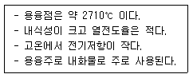
- 베릴리아 내화물
- 내화 모르타르
- 캐스터블 내화물
- 지르코니아 내화물
(정답률: 62%)
64. 다이어프램 밸브(diaphragm valve)의 특징이 아닌 것은?
- 유체의 흐름이 주는 영향이 비교적 적다.
- 기밀을 유지하기 위한 패킹이 불필요하다.
- 주된 용도가 유체의 역류를 방지하기 위한 것이다.
- 산 등의 화학 약품을 차단하는데 사용하는 밸브이다.
(정답률: 87%)
65. 좋은 슬래그가 갖추어야 할 구비조건으로 틀린 것은?
- 유가금속의 비중이 낮을 것
- 유가금속의 용해도가 클 것
- 유가금속의 용융점이 낮을 것
- 점성이 낮고 유동성이 좋을 것
(정답률: 72%)
66. 에너지를 사용하여 만드는 제품의 단위당 에너지 사용 목표량 또는 건축물의 단위면적당 에너지사용 목표량을 정하여 고시하는 자는?(관련 규정 개정전 문제로 여기서는 기존 정답인 4번을 누르면 정답 처리됩니다. 자세한 내용은 해설을 참고하세요.)
- 국토해양부장관
- 에너지관리공단이사장
- 대통령
- 지식경제부장관
(정답률: 65%)
67. 유체가 관로 내를 흐를 때 유체가 갖고 있는 에너지 일부가 유체 상호간 혹은 유체와 내벽과의 마찰로 인해 소모되는 것은 마찰손실이라 하는데, 다음 마찰 손실 중 국부저항손실수두가 아닌 것은?
- 배관중의 밸브, 이음쇄류 등에 의한 것
- 관의 굴곡부분에 의한 것
- 관내에서 유체와 관 내벽과의 마찰에 의한 것
- 관의 축소, 확대에 의한 것
(정답률: 68%)
68. 일정 규모 이상의 에너지를 사용하게 되면 시 ㆍ 도지사에게 에너지사용량을 신고하여야 한다. 다음 중 에너지사용량 신고를 하여야 하는 것은?
- 염색공장에서 벙커 c유 1,300,000L/년, 경유 500L/년을 사용하고, 계약전력 500kW 전기 2백만kwh/년을 사용한다.
- 의류공장에서 천연가스를 1,200,000Sm3/년을 사용하고, 계약전력 300kW 전기 1백만kWh/년을 사용한다.
- 호텔에서 도시가스를 1,000,000Sm3/년을 사용하고, 계약전력 500kW 전기 3백만kWh/년을 사용한다.
- 목욕탕에서 경유를 1,500,000L/년 사용하고, 계약전력 300kW 전기 3백만kWh년/을 사용한다.
(정답률: 71%)
69. 다음 중 최고 안전 사용온도(℃)가 가장 낮은 보온재는?
- 염화비닐 폼
- 폼 글라스
- 암면
- 규산칼슘
(정답률: 78%)
70. 지식경제부장관이 에너지관리 대상자에게 개선명령을 할 수 있는 경우는 에너지관리지도 결과 몇 % 이상의 에너지 효율개선이 기대될 때로 규정하고 있는가?
- 50%
- 30%
- 20%
- 10%
(정답률: 71%)
71. 다음 중 샤모트질계 내화물의 주성분은?
- 마그네사이트(MgCO3)
- 카올리나이트(Al2O3ㆍ2SiO2ㆍ2H2O)
- 납석(Al2O3ㆍ4SiO2ㆍH2O)
- 크로마이트(Cr2O3ㆍFeO)
(정답률: 67%)
72. 가열방법에 따른 노의 분류 중 직접가열식이 아닌 것은?
- 평로
- 용광로
- 용선로
- 전로
(정답률: 38%)
73. 보온재나 단열재 및 보냉재 등으로 구분하는 기준은?
- 열전도율
- 안전사용온도
- 압력
- 내화도
(정답률: 85%)
74. 규조토질 단열재의 안전사용온도는?
- 300℃ ~ 500℃
- 500℃ ~ 800℃
- 800℃ ~ 1,200℃
- 1,200℃ ~ 1,500℃
(정답률: 69%)
75. 도자기 소성 시 노내 분위기의 순서를 바르게 나타낸 것은?
- 산화성 분위기 → 환원성 분위기 → 중성 분위기
- 산화성 분위기 → 중성 분위기 → 환원성 분위기
- 환원성 분위기 → 중성 분위기 → 산화성 분위기
- 환원성 분위기 → 산화성 분위기 → 중성 분위기
(정답률: 65%)
76. 제련에서 중금속 비화물이 균일하게 녹아 있는 인공적인 혼합물이며, 원료 중에 As, Sb 등이 다량으로 들어 있고 이것이 환원분위기에서 산화 제거되지 않을 때 생기는 것은?
- 스파이스
- 매트
- 플럭스
- 슬래그
(정답률: 62%)
77. 고온용 무기질 보온재로서 경량이고 기계적강도가 크며 내열성, 내수성이 강하며 내마모성이 있어 탱크, 노벽 등에 적합한 보온재는?
- 암면
- 석면
- 규산칼슘
- 탄산마그네슘
(정답률: 69%)
78. 다음 중 배소(roasting)에 대한 설명으로 틀린 것은?
- 화합수와 탄산염을 분해한다.
- 황, 인 등의 유해성분을 제거한다.
- 산화배소는 일반적으로 흡열반응이다.
- 산화도를 변화시켜 자력선광을 할 수 있도록 한다.
(정답률: 63%)
79. 다음 중 중성내화물은?
- 규석 벽돌
- 마그네시아 벽돌
- 크롬질 벽돌
- 납석 벽돌
(정답률: 67%)
80. 에너지이용 합리화를 위한 계획 및 조치에 대한 설명으로 틀린 것은?
- 에너지이용 합리화 기본계획은 5년 주기로 수립하여야 한다.
- 에너지이용 합리화 기본계획에는 열사용기자재의 안전관리에 관한 내용을 포함하여야 한다.
- 에너지이용 합리화 기본계획 수립 시 국회에 상정하여 심의를 거쳐 확정한다.
- 에너지절약 정책의 수립 및 추진에 관한 사항을 심의하기 위하여 국가에너지절약추진위원회를 두어야 한다.
(정답률: 80%)
5과목: 열설비설계
81. 과열기(Super heater)에 대한 설명 중 틀린 것은?
- 보일러에서 발생한 포화증기를 가열하여 증기의 온도를 높이는 장치이다.
- 저압 보일러의 효율을 상승시키기 위하여 주로 사용된다.
- 증기의 열에너지가 커 열손실이 많아질 수 있다.
- 고온부식의 우려와 연소가스의 저항으로 압력손실이 크다.
(정답률: 67%)
82. 보일러의 급수를 예열하는 방법 중 증기터빈에서 추기된 증기에 의해 가열하는 것은?
- 헌열기
- 급수가열기
- 과열기
- 재열기
(정답률: 52%)
83. 공기비가 1.3 일 때 100Sm3의 공기로 완전연소 시킬 수 있는 황(S)의 양은 약 몇 kg 인가?
- 11.5
- 23.1
- 27.6
- 34.5
(정답률: 55%)
84. [그림]과 같은 V형 용접이음의 인장응력(σ)을 구하는 식은?
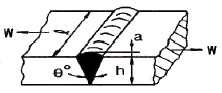
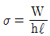
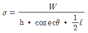
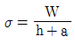
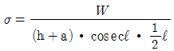
(정답률: 85%)
85. 평노통, 파형노통, 화실 및 직립보일러 화실판의 최고 두께는 몇 mm 이하이어야 하는가? (단, 습식화실 및 조합노통 중 평노통은 제외한다.)
- 11
- 22
- 33
- 44
(정답률: 74%)
86. 보일러의 급수처리방법에 해당되지 않는 것은?
- 이온교환법
- 응집법
- 희석법
- 여과법
(정답률: 58%)
87. 보일러 동내부와 수관 내에 부착된 스케일을 제거하기 위해 화학적인 방법 중 염산을 이용한 산세관법을 많이 쓰고 있다. 염산을 많이 쓰는 이유로 가장 거리가 먼 것은?
- 스케일의 용해능력이 우수하여
- 위험성이 적고 취급이 용이하여
- 가격이 저렴하여 경제적이어서
- 세관 후 물과 분리가 쉬워서
(정답률: 64%)
88. 다음 중 보일러의 안전장치가 아닌 것은?
- 저수위 경보기
- 화염검출기
- 방폭문
- 댐퍼
(정답률: 79%)
89. 보일러의 성능시험방법에 대한 설명으로 옳은 것은?
- 증기건도는 강철제 또는 주철제로 나누어 정해져있다.
- 측정은 매 1시간 마다 실시한다.
- 수위는 최초 측정치에 비해서 최종측정치가 적어야 한다.
- 측정기록 및 계산양식은 제조사에서 정해진 것을 사용한다.
(정답률: 69%)
90. 급수처리에 있어서 양질의 급수를 얻을 수 있으나 비용이 많이 들어 보급수의 양이 적은 보일러에 주로 사용하는 급수처리 방법은?
- 증류법
- 여과법
- 탈기법
- 이온교환법
(정답률: 72%)
91. 보일러장치에 대한 설명으로 옳지 않은 것은?
- 절탄기는 연료공급을 적당히 분배하여 완전연소를 위한 장치이다.
- 공기예열기는 연소가스의 예열로 공급공기를 가열 시키는 장치이다.
- 과열기는 포화증기를 가열시키는 장치이다.
- 재열기는 원동기에서 팽창한 포화증기를 재가열시키는 장치이다.
(정답률: 71%)
92. 보일러 설계 시 크리프 영역에 달하지 않는 설계 온도에서의 철강재료 허용인장응력은?
- 상온에서의 최소 인장강도의 1/4
- 상온에서의 최소 인장강도의 1/3
- 상온에서의 최소 인장강도의 1/2
- 상온에서의 최소 인장강도의1/√2
(정답률: 62%)
93. 열사용 설비는 많은 전열면을 가지고 있는데 이러한 전열면이 오손되면 전열량이 감소하고 또 열설비의 손상을 초래한다. 이에 대한 방지대책으로 틀린 것은?
- 황분이 적은 연료를 사용하여 저온부식을 방지한다.
- 첨가제를 사용하여 배기가스의 노점을 상승시킨다.
- 과잉공기를 적게 하여 저공기비 연소를 시킨다.
- 내식성이 강한 재료를 사용한다.
(정답률: 68%)
94. 보일러의 안전밸브에 대한 설명 중 옳지 않은 것은?
- 안전밸브는 가능한 한 동체에 직접 부착시켜야 한다.
- 전열면적 50m 이하의 증기보일러에는 1개 이상의 안전밸브를 설치한다.
- 안전밸브 및 압력 방출장치의 크기는 호칭지름 25mm 이상으로 하여야 한다.
- 안전밸브와 안전밸브가 부착된 동체 사이에는 차단 밸브를 1개 이상 설치하여야 한다.
(정답률: 70%)
95. 보일러의 부대장치 중 공기예열기의 적정온도는?
- 30~50℃
- 50~100℃
- 100~180℃
- 180~350℃
(정답률: 76%)
96. 내경이 220mm 이고, 강판두께가 10mm 인 파이프의 허용인장응력이 6kg/mm2일 때, 이 파이프의 유량이 40L/s이다. 이 때 평균유속은 약 몇 m/s 인가? (단, 유량계수는 1 이다.)
- 0.92
- 1.⑤
- 1.23
- 1.78
(정답률: 45%)
97. 열팽창에 의한 배관의 이동을 구속 또는 제한하는 것을 레스트레인트(restraint)라 한다. 레스트레인트의 종류에 해당하지 않는 것은?
- 앵커(anchor)
- 스토퍼(stopper)
- 리지드(rigid)
- 가이드(guide)
(정답률: 81%)
98. 보일러수에 녹아있는 기체를 제거하는 탈기기(脫氣機)가 제거하는 대표적인 용존 가스는?
- O2
- N2
- H2S
- SO2
(정답률: 80%)
99. 내화벽돌이 두께 140mm 적벽돌 및 100mm 단열 벽돌로 되어있는 노벽이 있다. 이것의 열전도율은 각각 1.2, 0.06kcal/m ㆍ h ㆍ ℃ 이다. 이 때 손실열량은 약 몇 kcal/m2ㆍ h 인가? (단, 노내 벽면의 온도는 1000℃ 이고, 외벽면의 온도는 100℃ 이다.)
- 289
- 442
- 5⑤
- 635
(정답률: 45%)
100. 내압 60kgf/cm2 이 작용하는 외경 150mm, 두께 5mm 의 파이프에 작용하는 축방향의 인장력은 약 몇 kgf 인가?
- 2450
- 7625
- 9566
- 19133
(정답률: 38%)
이유는 가열실의 이론 효율(E1)은 (tr - ti) / (tr - ta)로 나타내며, 이는 가열실에서 피열물의 온도(ti)가 이론연소온도(tr)에 가까워질수록 효율이 높아지기 때문입니다. 또한, 가열실의 외부온도(ta)가 낮을수록 효율이 높아지므로 분모가 작아지게 됩니다. 따라서, ""가 옳은 식입니다.